Thermodynamic computing for robotics · benchmark report · 18 October 2026
Thermox Refinement Benchmark
Seventeen linear-algebra problems, from the Kalman filter of a pick-and-place robot to dense random matrices. Each one is solved by an exact digital method, a standard digital iteration, a simulated thermodynamic chip on its own, and the same chip inside digital iterative refinement.
Emulator: thermox 0.0.3 (Ornstein–Uhlenbeck sampler) · robot: Franka Panda in MuJoCo · accuracy target: 1e-4 relative error unless stated
Exact: digital Cholesky solve, the reference answer
CG: digital conjugate gradient, the standard iterative method
Plain thermox: one chip run of N samples, averaged
IR cold: chip inside iterative refinement, starting from zero
IR warm: the same, starting from the previous answer
Findings
Refinement fixes the chip's accuracy problem.Reaching 1e-4 with plain thermox would take 10⁸–10¹² samples. Inside iterative refinement the same chip needs 40–33,000. It converged on 16 of the 17 problems.
Chip time follows difficulty, not size.About 200, 1,700 and 17,000 samples at condition number κ = 10, 100 and 1000, whether the matrix has 16 or 256 rows. At κ ≈ 15,000 (P6) it never converges.
For robot-sized problems the CPU wins.Kalman gains, arm IK and a 70-variable MPC take 0.3–10 µs on one CPU core. The same solves need 4–330 µs on an optimistic future chip and 0.3–21 ms on today's prototype-class hardware.
The chip pulls ahead only on large dense systems.At d = 256 an optimistic chip is between 1.3× slower and 2× faster than the CPU. Extrapolated to d ≥ 1024 it is about 1.3–5× faster than one core.
Imperfect hardware is where refinement matters most, and where it hits a wall.With 10% component mismatch plain thermox is 30–290% off while refinement still reaches the target. On hard problems (κ ≈ 1000) just 1% mismatch makes the chip physically unstable.
Part 1
How the solvers work
The common task
Every problem here is a linear system: find x in A·x = b. A is a known square table of numbers (symmetric and positive definite) and b is known. Robots solve thousands of these every second. They use them to weigh a camera reading against a prediction (Kalman filter), to turn a desired hand motion into joint motions (inverse kinematics), and to plan torques a fraction of a second ahead (model predictive control).
Two numbers describe how hard a system is. The size d is the number of unknowns. The condition number κ measures how unequal the matrix's eigenvalues are: κ = 1 is trivial and κ = 10,000 is hard. For a thermodynamic chip κ matters most, because the slowest direction of the system relaxes κ times slower than the fastest.
How a thermodynamic chip solves A·x = b
The chip is a set of d coupled analog cells. In Normal Computing's prototype these are 8 RLC circuits on a circuit board. The couplings are programmed so the cells' voltages are pulled toward the solution x*, while heat noise keeps shaking them. The voltages never settle; they wander around x*, and averaging their readings over time gives an estimate of it. thermox simulates exactly this process, an Ornstein–Uhlenbeck process.
Two things limit the accuracy of that average:
Start-up bias. The chip starts at x₀ = 0, and the early readings drag the average toward zero.
Slow averaging. The noise only averages out like 1/√time, so 10× more accuracy costs 100× more chip time.
A 2-cell chip at work. The orange trail is the chip's state shaken by heat noise. The black dot is its running average, and the cross is the true solution. Right: the error of the average falls only like 1/√time, and it wanders while doing so. After 80 relaxation times this run is still about 50% off, because the matrix's slow direction takes 4 relaxation times to forget each kick.
Iterative refinement: check the answer, then solve only for the mistake
The chip's error is a fixed fraction ε of whatever it is asked to solve. So the improved method asks it for something small:
The digital computer checks the current answer exactly: r = b − A·x.
It scales that leftover r up to the chip's full input range.
The chip solves for the missing piece d.
The computer adds it: x ← x + d.
Each round multiplies the remaining error by ε (with ε = 0.5: 50% → 25% → 12.5%). Accuracy therefore improves geometrically with rounds instead of like 1/√time. Warm start uses the robot's previous answer as the starting point. The robot solves a slightly different system every few milliseconds, so the first leftover is already tiny.
The refinement loop. The two highlighted arrows are the only traffic between the computer and the chip: a scaled leftover goes in and a correction comes out. Each crossing costs converter time on real hardware.
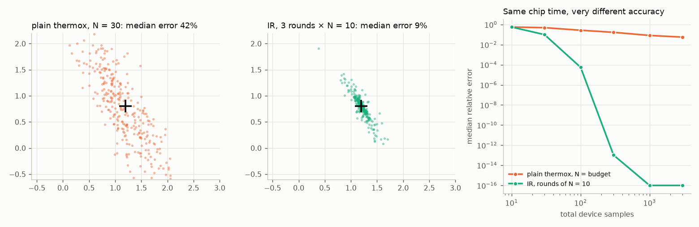
Same chip time, very different accuracy. 300 repeated solves of a 2-cell system (κ = 4) with 30 samples each. Plain thermox spreads widely (median error 42%). Refinement with 3 rounds of 10 samples is 9% off. Right: at 1,000 samples refinement reaches machine precision, while plain thermox is still about 8% off.
The digital baselines
Exact (Cholesky) factorises the matrix and solves directly in about d³/3 operations. It gives the reference answer.
CG (conjugate gradient) is the standard iterative method. Each step costs one matrix–vector product (about 2d² operations), the same digital cost as one refinement round. The Jacobi-preconditioned variant (PCG) was also tried, cold and warm, and the best result is reported.
Rules that keep the comparison fair
Same targets. Relative error 1e-2, 1e-4 and 1e-6 against numpy's exact answer. A configuration counts only if at least 95% of its solves reach the target.
Chip time in samples. One sample is the chip's fastest relaxation time. The matrix is scaled so its largest eigenvalue maps to that speed.
Full converter range. Each input is scaled so its largest entry uses its converter's full range, because every cell has its own converter.
Best configuration for every method. Refinement: N from 10 to 1,000 samples per round, with or without Jacobi scaling, cold or warm. CG: plain or Jacobi, cold or warm.
Equal chip time in every comparison picture. Plain thermox gets exactly as many samples as refinement used, so each picture shows the same hardware time used two ways.
Wall-clock times use one x86 CPU core (about 1 GFLOP/s on tiny matrices, rising to 20 GFLOP/s at d = 256) and three chip scenarios:
Eight problems come from the robot and from physics simulation, and nine are synthetic matrices that vary size and difficulty independently. Each problem page below follows the same layout:
a strip of facts and two verdict chips;
a plain-language explanation;
a picture comparing the methods' solutions at equal chip time;
convergence curves for one representative solve: chip time on the left, digital work on the right;
the numbers: chip samples and digital steps to 1e-4, then the estimated time per solve to 1e-2 and 1e-4 for the CPU, plain thermox and refinement on each chip scenario.
"Verdict" compares the optimistic integrated chip with the faster of the two CPU methods, at 1e-4. The prototype-class chip is slower than the CPU on every problem, by 200× to 15,000×.
Robot perception · P1–P3
The Kalman filter in the pick-and-place robot
A Franka Panda arm picks a 4 cm cube off a conveyor moving at 8 cm/s. A simulated camera reports the cube's position 33 times a second with about 1.5 cm of noise. A Kalman filter combines these noisy readings with a constant-velocity model to estimate where the cube is and how fast it moves, and the arm aims for where the cube will be.
At every camera frame the filter must solve S·Kᵀ = H·P for its gain K. Here S = H·P·Hᵀ + R is a 3×3 matrix built from the filter's uncertainty P and the camera noise R, and there are 6 right-hand sides. The gain decides how much to trust each new reading.
The scene. White is the true cube path, coloured is the filter's estimate, green is the gripper path, red dots are camera readings and yellow is the predicted intercept point.
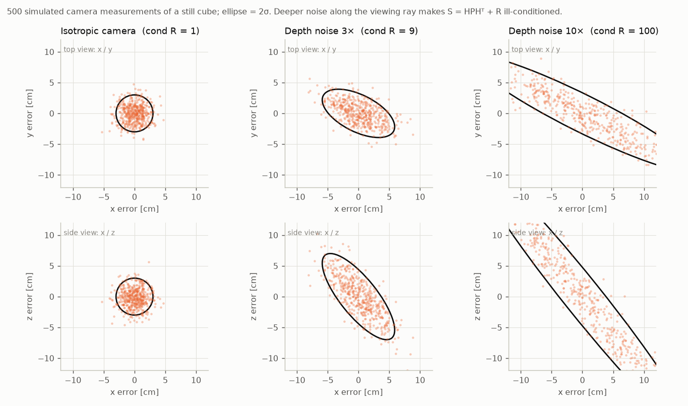
Three cameras. A depth camera is much noisier along its viewing ray. That tilted, stretched noise makes S harder to solve: κ ≈ 1, 9 and 94.
P1Kalman gain, isotropic camera
The problem
The camera is equally noisy in every direction, so the filter's uncertainty is the same in x, y and z. S is then just a number times the identity, the easiest system possible (κ = 1). This is the system from the original pick-and-place test.
What happened
With 39 chip samples per gain, plain thermox gets the gain wrong by 27% on average. The filter tolerates this for position (7.6 mm error versus 6.7 mm exact), but its velocity estimate suffers more (17.6 versus 14.7 mm/s).
With the same 39 samples, IR warm starts from the previous gain and needs 3.9 rounds of 10 samples to land within 0.006% of it. That filter is indistinguishable from the exact one. CG needs less than one iteration on average, because a scaled identity is solved in one step.
The robot itself (from the earlier 100-seed test, which used the original solver scaling). Panels: exact, plain thermox N = 10,000, plain thermox N = 10, and refinement with 3 rounds of 10 samples from the previous gain. Over 100 seeds the refinement solver matched the exact solver's pick outcome on every seed (94% success). Plain N = 10 dropped to 89%.
Solutions compared at equal chip time (39 samples per gain). Top right: plain thermox's gain is 10–40% off at every update, while refinement stays at the 1e-4 target. Bottom: the refinement filter (yellow) sits on the exact filter (grey); plain thermox (orange) wanders.
Convergence for one gain update. Left: refinement reaches 1e-4 in about 90 samples cold and 30 warm; plain thermox needs about 10⁸. Right: CG solves this trivial system in one matrix–vector product.
Numbers
P2Kalman gain, depth noise 3×
The problem
The camera is 3× noisier along its viewing ray, which points obliquely down at the belt. The noise is a tilted ellipsoid, so S becomes a full 3×3 matrix with κ ≈ 9.
What happened
At 88 chip samples per gain, plain thermox is 30% off, giving 10.9 mm position error versus 10.1 mm exact. IR warm with Jacobi scaling needs 8.8 rounds of 10 samples and matches the exact filter. Raising the condition number from 1 to 9 more than doubled the chip time refinement needs (39 → 88 samples).
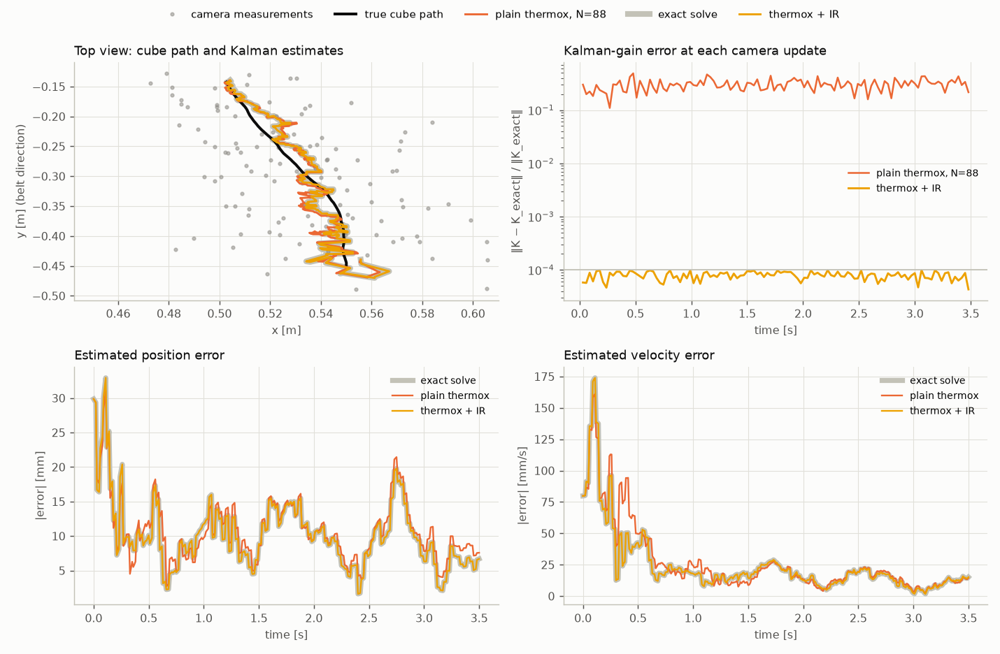
Solutions compared at equal chip time (88 samples per gain). The measurements spread more widely, plain thermox's gain is about 30% off at every update, and refinement holds 1e-4.
Convergence for one gain update. CG still needs only 1–2 steps on a 3×3 system, while refinement needs about 9 rounds.
Numbers
P3Kalman gain, depth noise 10×
The problem
Ten times more noise along the viewing ray gives κ ≈ 94. The slowest direction of S now relaxes 94× slower on the chip than the fastest. Each refinement round therefore needs about 100 samples before it reliably shrinks the error.
What happened
At 1,159 samples plain thermox's gain is 44% off. Surprisingly, in this run the filter's position error was slightly lower than exact (21.4 versus 22.5 mm). A Kalman filter tolerates moderate gain errors, and a smaller gain can help on one particular noise realisation; averaged over many runs the exact gain is the best one.
IR warm needs 11.6 rounds of 100 samples and matches the exact filter. For the optimistic chip this is the worst robot problem, at 224× slower than a CPU solve.
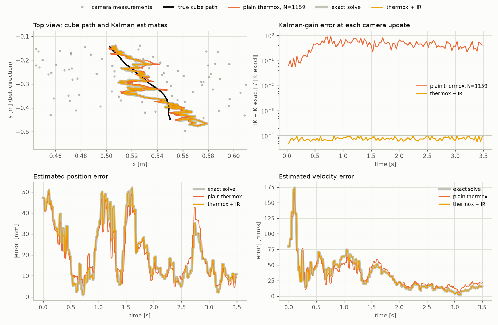
Solutions compared at equal chip time (1,159 samples per gain). The measurement cloud is stretched along the viewing ray. Plain thermox's gain error climbs to around 50% once the filter settles, and refinement stays at 1e-4.
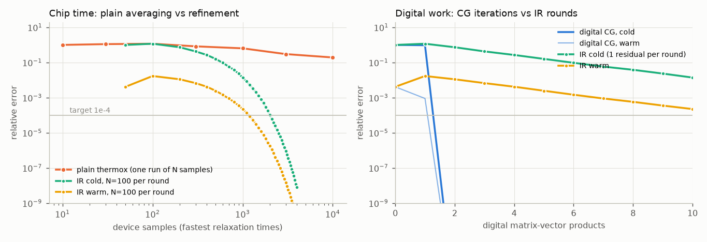
Convergence for one gain update. With N = 100 per round, each round cuts the error by about 1.4–1.6×. Plain thermox would need about 10¹⁰ samples to reach 1e-4.
Numbers
Robot motion · P4–P6
Moving the arm: inverse kinematics and model predictive control
P4Arm inverse kinematics
The problem
100 times a second the controller turns the desired gripper pose into joint angles by damped least squares, repeating the step 4 times per tick:
Δq = Jᵀ (J·Jᵀ + λ²I)⁻¹ e
Here J is the arm's 6×7 Jacobian and e is the 6-D position and orientation error. The 6×6 system changes every tick, and it gets harder (κ ≈ 90, up to 144) when the arm nears awkward poses. The benchmark uses the first of the 4 steps per tick. The robot run below puts the chip in every step.
Mid-approach at t = 2.4 s. Each tick, IK converts the green gripper path into the 7 joint angles.
What happened
We ran the whole pick-and-place with the IK solve replaced, keeping the exact Kalman filter. At the same 572 samples per solve, plain thermox is 7.6% off on each solve. The 4 IK steps per tick still correct it: the final pose is within 0.23 µm instead of 0.015 µm, and all three robots grasp the cube identically (9.41 mm, picked).
IK is the most forgiving problem in the set, because it does not need an accurate linear solve at all. IR warm still reaches 1e-4 with 19 rounds of 30 samples. CG needs 6 iterations, as expected for a 6×6 system.
The robot with each IK solver. Exact, plain thermox (572 samples per solve) and refinement. The motions are indistinguishable and all three pick the cube.
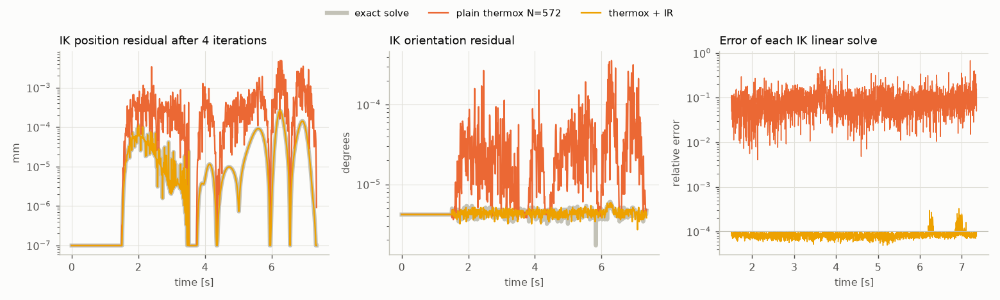
Solutions compared at equal chip time. Left and middle: pose error left after the 4 IK steps. Plain thermox spikes to about 5 µm and 0.0003°, which is harmless for a 15 mm grasp tolerance. Right: each linear solve is about 8% off with plain thermox and at 1e-4 with refinement.
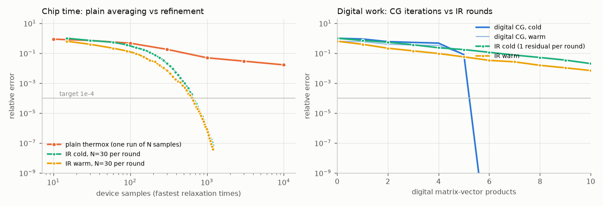
Convergence for one IK solve. CG finishes in 6 steps; refinement needs about 20 rounds of 30 samples.
Numbers
P5Torque MPC
The problem
Model predictive control plans joint torques 0.2 s ahead (10 steps of 20 ms) at every tick, using the arm's mass matrix M(q) at its current pose. It applies the first step of the plan and replans on the next tick. The plan is the solution of a 70×70 system H·U = −g: 7 joints × 10 steps of torque. A weight on torque effort, set to 0.01 here, decides the conditioning: κ ≈ 1,500.
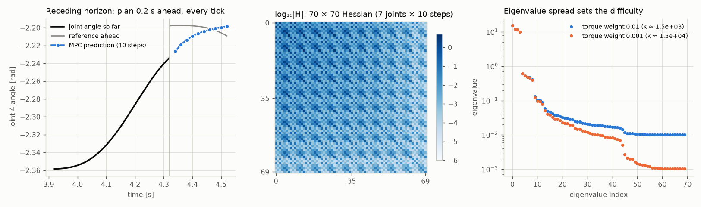
What the solve produces. Left: the 10-step prediction (blue) pulls the lagging joint toward its reference. Middle: the Hessian couples every joint and step. Right: a lower torque weight lowers the smallest eigenvalues, which is what P6 tests.
What happened
At 29,221 samples per plan, plain thermox gives torque plans that are wrong by about 200%. The first torque, the one actually applied, is off by up to 5 N·m. IR warm needs 29 rounds of 1,000 samples and matches the exact plan. CG needs 26 iterations.
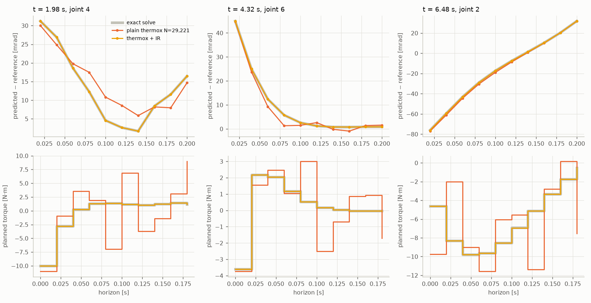
Solutions compared at equal chip time (29,221 samples per plan), at three moments of the run. Top: predicted joint deviation from the reference. Bottom: the planned torques. Refinement (yellow) lies on the exact plan (grey); plain thermox's torques jump around.
Convergence for one plan. With N = 1,000 per round, each round shrinks the error only about 1.3–1.4×, because the chip's slowest direction relaxes 1,500 sample-times. Warm start barely helps here: the plan shifts by a whole step between ticks.
Numbers
P6Torque MPC, low torque weight
The problem
This is the same controller with a torque weight 10× smaller (0.001). The robot may then use more torque to track tightly, but the system is 10× harder, with κ ≈ 15,000. Low input weights like this are common in practice.
What happened
This is the one problem the thermodynamic approach could not solve. Refinement stalls after a few rounds even with 1,000 samples per round, because a round no longer reliably shrinks the error. Plain thermox with 40,000 samples is 440% off. CG still converges in 58 iterations.
Making it work would need more than 15,000 samples per round, or a preconditioner that tames the conditioning before the matrix goes on the chip.
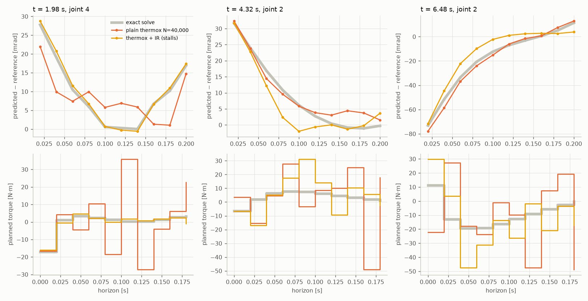
Solutions compared at equal chip time (40,000 samples per plan). Both chip methods give wrong plans. The stalled refinement is off by 69% (median over the run), and plain thermox is off by 440%.
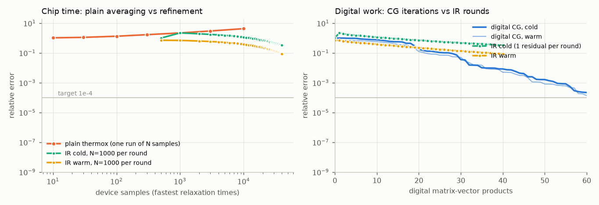
Convergence for one plan. The refinement curves flatten, while CG keeps going.
Numbers
Physics simulation · P7–P8
A heated plate: the friendliest case for analog hardware
A square plate on an n×n grid is warmed by a heat source that moves across it, and the temperature is stepped forward with implicit Euler: (I + αL)·uk+1 = uk + fk. L links each cell to its four neighbours.
The matrix never changes, so the chip is programmed once and each time step only sends a new right-hand side. That removes the reprogramming cost that hurts the robot problems. Each step also starts close to the previous temperature field, which suits warm start.
The five-point stencil. A cell's new temperature is coupled to its four neighbours, so on a chip each cell needs just four couplings.
The system. Left: temperature at step 16 and the path of the heat source. Middle: the matrix is banded. Right: eigenvalues; the 16×16 grid is about twice as hard (κ 53 versus 24).
P7Heat equation, 8×8 grid
What happened
With 64 cells and κ ≈ 24, we simulated 30 time steps, feeding each method's own answer into the next step. At 327 samples per step, plain thermox leaves the temperature field 10–15% off. The error does not grow here, because heat diffusion smooths errors away. IR warm needs 10.9 rounds of 30 samples and stays within 1e-4.
Solutions compared at equal chip time (327 samples per step). The plain thermox field is visibly speckled and dimmer, while the refinement field matches the exact one.
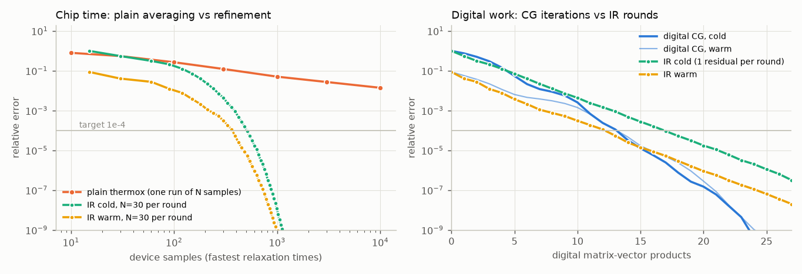
Convergence for one time step. Warm start from the previous field saves about a third of the rounds. CG needs 14 steps.
Numbers
P8Heat equation, 16×16 grid
What happened
With 256 cells and κ ≈ 53, plain thermox at 594 samples per step drifts: the field error grows from 7% at the first step to 17% at step 30, because each step's error feeds the next. IR warm with 19.8 rounds of 30 samples holds 1e-4.
This is the closest any real-world problem came to the CPU. The fixed matrix means programming is paid once, and the optimistic chip is 2.7× slower than a Cholesky solve that reuses its factorisation. It is faster than CG.
Solutions compared at equal chip time (594 samples per step). Plain thermox's error climbs as it accumulates; refinement stays flat at the target.
Convergence for one time step. CG needs 20 steps and refinement about 20 rounds, so the digital work is the same here.
Numbers
Random dense matrices · P9–P17
Separating size from difficulty
Nine synthetic problems cover every combination of size d = 16, 64 or 256 and difficulty κ = 10, 100 or 1000. The eigenvalues are spread evenly on a log scale between 1 and κ and the eigenvectors are random, so every entry of the matrix is non-zero. Each problem has 5 independent systems, so warm start does not apply.
The pattern across all nine:
At equal chip time, plain thermox is 4–19% off.
Refinement reaches 1e-4 in about 16–34 rounds.
The chip time it needs grows about 10× for every 10× in κ, and hardly at all with d.
CG iterations grow with √κ, and are capped near d for the small matrices.
P9Random SPD, d = 16, κ = 10
Small and easy. Refinement needs 19 rounds of 10 samples (188 samples) and CG needs 11 iterations. At equal chip time plain thermox is 11% off.
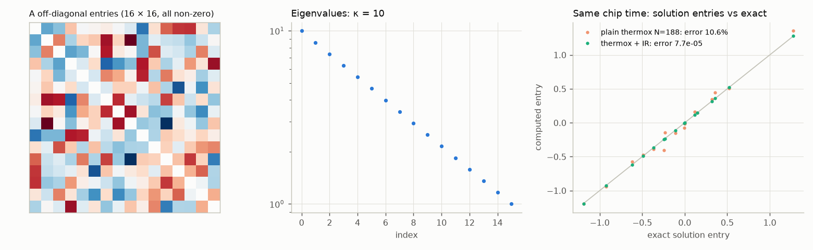
Matrix and solutions at equal chip time. Right: points on the diagonal line are exact. Plain thermox's points scatter around it, while refinement's sit on it.
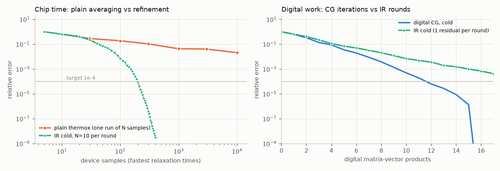
P10Random SPD, d = 16, κ = 100
Ten times harder, so each round needs 10× more samples: 16 rounds of 100. CG needs 16 iterations, which is all a 16-unknown system can ever take. The optimistic chip is 35× slower than the CPU.
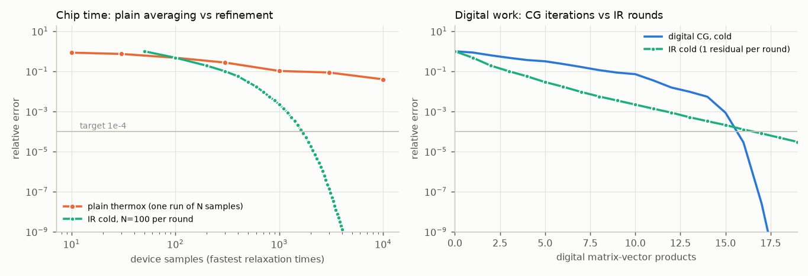
P11Random SPD, d = 16, κ = 1000
This is the worst ratio in the study: the optimistic chip is 274× slower than the CPU. Refinement needs 17 rounds of 1,000 samples, while CG still needs only 18 iterations because the system is small. Chip time grows with κ, but the CPU's does not.
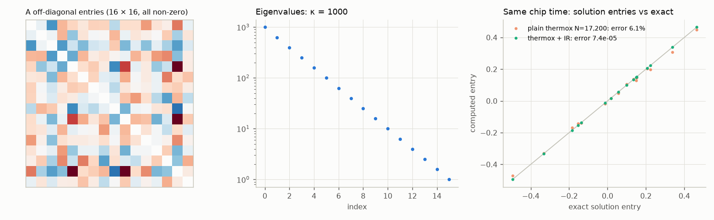
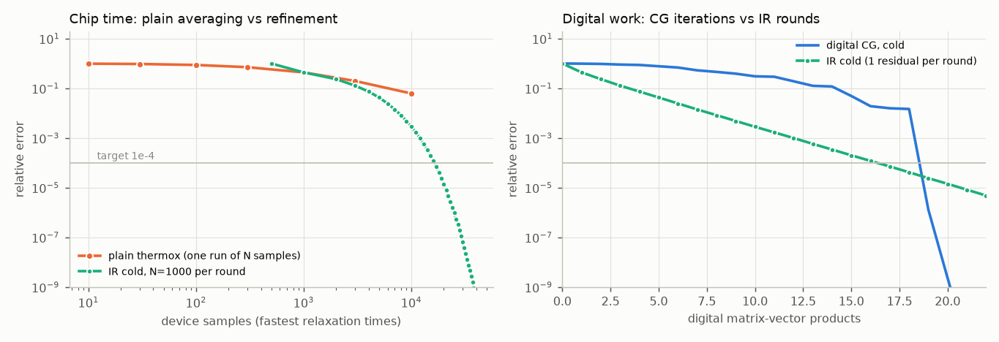
P12Random SPD, d = 64, κ = 10
Refinement needs 25 rounds of 10 samples and CG needs 14 iterations. Plain thermox at equal chip time is 19% off. The optimistic chip is within 2.4× of the CPU, which now pays d³/3 ≈ 87,000 operations for Cholesky.
P13Random SPD, d = 64, κ = 100
This is the first problem where refinement needs fewer digital steps than CG: 18 rounds versus 36 iterations. The chip is still 4.2× slower in wall-clock time, because each round waits for 100 samples and a round trip.
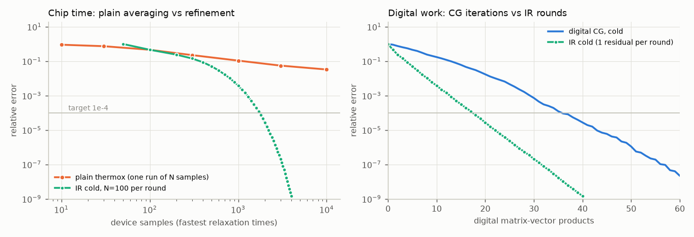
P14Random SPD, d = 64, κ = 1000
Refinement needs 17 rounds against CG's 75 iterations, so the digital saving grows with κ. But each round now waits for 1,000 samples, and the optimistic chip is 23× slower in total.
P15Random SPD, d = 256, κ = 10
Refinement needs 34 rounds of 10 samples and CG needs 15 iterations. Cholesky now costs 5.6 million operations, so CG is the CPU's best option. The optimistic chip is 1.3× slower than CG.
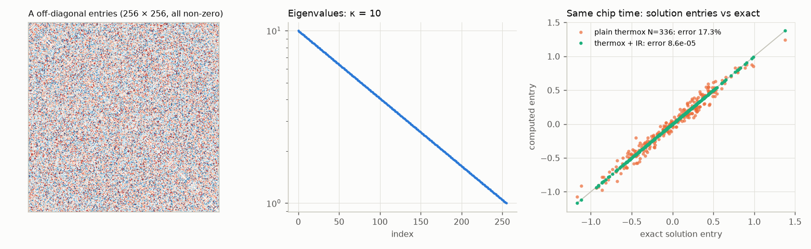
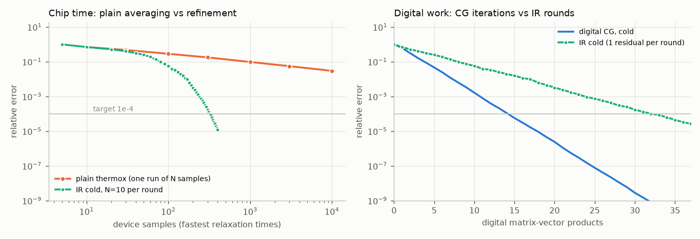
P16Random SPD, d = 256, κ = 100
This is the only measured problem where the optimistic chip beats the CPU: 132 µs, against 266 µs for Cholesky and 281 µs for CG. It wins because refinement needs 18 rounds where CG needs 45 iterations, and both pay one matrix–vector product per step.
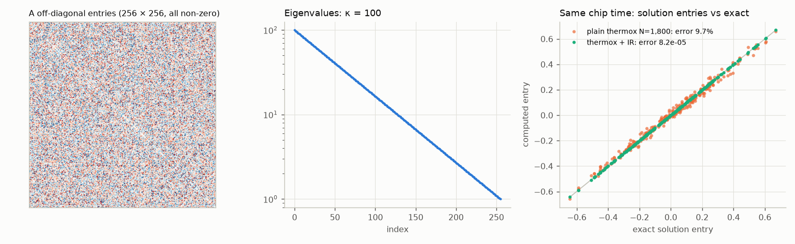
P17Random SPD, d = 256, κ = 1000
Refinement needs 17 rounds against CG's 126 iterations, the biggest digital saving in the study. The chip still loses to Cholesky by 1.3×. Each round needs 1,000 samples, and the one-off matrix must first be estimated and programmed.
Part 3
Results across all problems
Chip time and digital work to reach 1e-4. Left: plain thermox (orange, mostly extrapolated) needs 10⁸–10¹² samples, and refinement needs 10²–10⁴. Right: CG wins on small problems; refinement needs fewer digital steps once d ≥ 64 and κ ≥ 100.
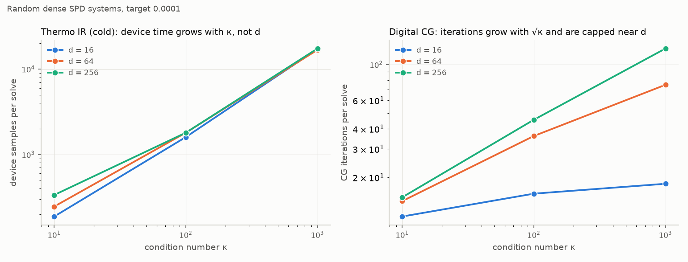
Size versus difficulty. Refinement's chip time depends on κ only, while CG's iterations grow with √κ and with d.
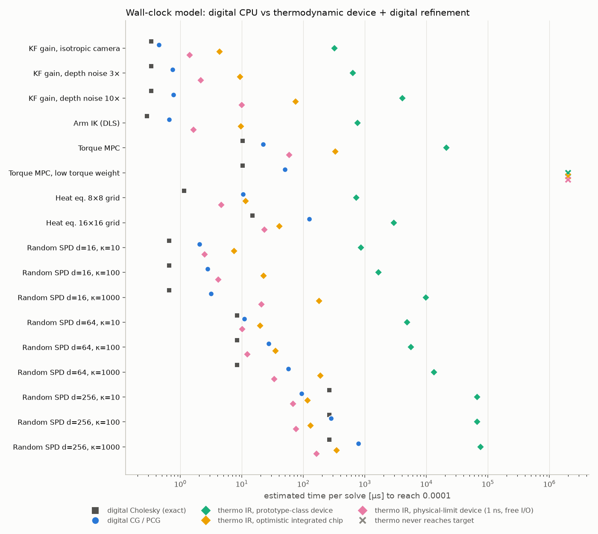
Estimated time per solve. The CPU (grey squares, blue dots) is fastest on every problem below d = 256. The prototype-class chip (green) is 200–15,000× slower everywhere. Even the physical-limit device (pink) only wins at d = 256.
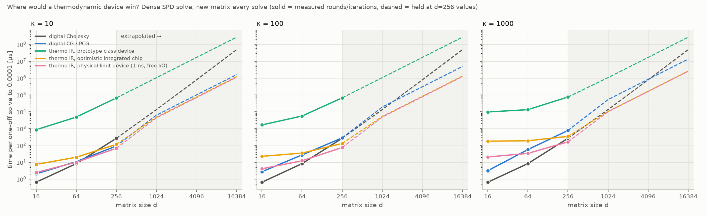
Where would a chip win? Dense one-off solves, measured up to d = 256 and extrapolated beyond (shaded). The optimistic chip crosses below the CPU near d = 256–1024. At d = 4096 it is about 4× faster than one CPU core at κ = 100, and about 5× at κ = 1000. The gain comes from needing fewer digital matrix–vector products, not from chip speed. A GPU or a strong preconditioner on the CPU would move the crossover further out.
Part 4
Physical practicality
The emulator's chip is perfect apart from heat noise. Real analog parts are not, so the benchmark added two kinds of imperfection. Coupling mismatch is a fixed random error on every programmed matrix entry, as component tolerances cause. Low-precision converters round inputs, outputs and couplings to 6–12 bits.
Imperfect hardware. Left: imperfections push plain thermox to 30–290% error. Right: refinement still reaches 1e-4, needing a few extra rounds (heat 8×8: 10.9 → 15.7 rounds at 10% mismatch). Crosses mark problems where the programmed matrix lost positive definiteness, so the physical process diverges. That happened for the κ ≈ 1000–1500 problems at just 1% mismatch, and for the MPC at 8 bits or fewer.
Rule of thumb from the stability failures: coupling precision must be finer than about 1/κ. A problem with κ = 1000 needs couplings accurate to better than 0.1%. Today's parts are far coarser. Normal Computing's prototype offers 4 diagonal capacitor values and 3 coupling values (−, 0, +), and IBM's 2023 analog chip uses 8-bit inputs and outputs.
Requirement
Status
Each chip solve less than 100% wrong, so refinement converges
Met in emulation for κ up to about 1000, with about κ samples per round
Reprogram the matrix every control tick
The main cost for robotics: d² entries per tick. For d ≤ 70 this alone takes longer than a whole CPU solve
One computer↔chip round trip per refinement round
4–35 per solve. That needs on-chip converters (about 100 ns), not a circuit board on a USB link (about 50 µs)
Coupling precision finer than 1/κ
Not available today for κ ≳ 100. Ill-conditioned robot problems such as MPC need preconditioning first
Large all-to-all arrays (d ≥ 1000)
Needed for any speed advantage: about a million programmable couplings at d = 1024. Analog memory chips reach 64 × 256² cells at 8 bits, but no thermodynamic solver that size exists
Part 5
Conclusion
The method works. Iterative refinement turns a thermodynamic chip from a slow, noisy averager into a solver whose accuracy improves by a fixed factor every round. It reached 1e-4 on 16 of 17 problems with 10⁵–10⁷× less chip time than plain thermox. It also absorbs the component mismatch and coarse converters that real analog hardware has.
For a robot, a thermodynamic co-processor is not practical today. A robot's linear algebra is small: a 3×3 Kalman gain, a 6×6 IK step, a 70×70 MPC plan. A CPU core solves these in 0.3–10 µs. Any analog chip must first be loaded with a new matrix, wait for its slowest mode to relax, and exchange data several times per solve. Even on an optimistic future chip that adds up to 4–330 µs. Some robot tasks barely need accuracy anyway: IK picked the cube with a 7.6%-wrong solver, and the Kalman filter tolerated 30–44% gain errors.
Where it could matter. The case for the hardware is large dense systems (d of 1,000 or more) with moderate conditioning, solved on a chip with fast on-chip converters and couplings precise to better than 1/κ. In that regime the chip acts like a very strong preconditioner: at d = 256, refinement needed 2.5–7× fewer digital steps than CG once κ ≥ 100. Nobody has built that chip yet. If it is built, warm-started iterative refinement is the right way to drive it.
Natural next experiments: precondition the MPC before it goes on the chip, test d ≥ 1000 directly, and add output-voltage limits and drift to the emulator.
Appendix
Reproduce & sources
Everything is in the project folder kf_thermox_pick_place/. Set PANDA_DIR to the MuJoCo Menagerie Panda model and MUJOCO_GL=egl on a headless Linux machine, then run:
python thermo_benchmark.py --problem all && python thermo_benchmark.py --report